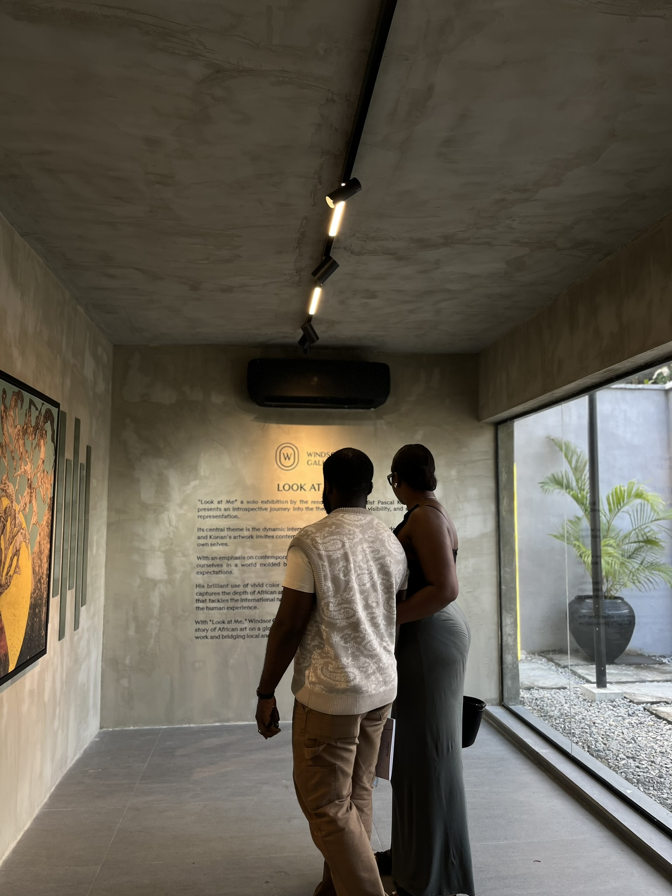

You're the best thing that has happened to me this year, and you might
call it selfish, or narcicistic of me, but I want to feel like this
every single year for the rest of my life
See your cute ass forehead
This journey is about to be rocky as fuck, and I'm ready to fight for
us
I imagine at this point that you're grinning from ear to ear😊😊
You're amazing, You Get Me, I get you, We're great together, just look
at us!!
So I just have one question to ask.
Hey you,

Thanks for tuning in.
To an amazing journey
🥂